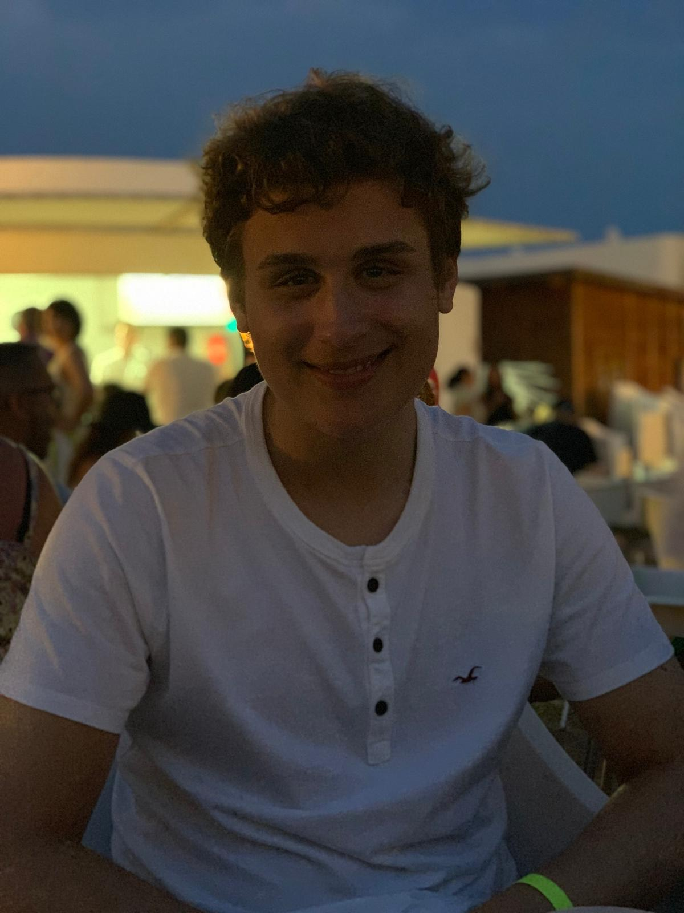

Mitchell MassiahHi,my name is Mitch and i'm a first year studying computer science at City, University of London. My life has revolved around computer science and music for the past 7 years. Starting off with python before branching off into C++ and html allowed me to love to create short projects and games whenever I had the chance. Outside of computer science Im an avid music lover and love to play the piano, guitar and violin or creating music using FL Studio in my free time. Combining both music and computer science in my projects has given me such a fun challenge and I can't wait for my computing skills to increase so I can branch out and try new areas i've yet to explore. |
 | |
|
|
||
Bootcamp 2020: Virtual KeyboardMy project I decided to create was a virtual keyboard, which has dual controls with both mouse and keyboard to allow polyphonism. The project utilises a heavy mix of arrays, for loops and switch cases which a lot of mouse and keyboard interaction, with each key cleverly mapped to recreate that of an actual keyboard layout that a lot of modern DAW's feature. To improve this I would have wished to add sliders for the reverb delay and EQ, to create the ultimate java virtual piano. The piano spans over 2 octaves long to allow some variety in whichever you decide to play. Check out the code on Github: https://github.com/mitchmas/adbt171 | ||
Programming in Java Coursework: Lil ShooterFor my programming project I created a small but accessible shooter which goes through multiple stages with the primary goal of collecting every coin to be able to progress. The enemies in this game are completely optional and not required to defeat in order to progress further. The game has GUI which reacts to variable changes and buttons that allow free control such as saving and loading to various files and toggling mute on the background music. I had to overcome many challenges in order to create the game, with the multi-directional bullets and the reading and saving from various states proving difficult, as did the timer to generate randomly located enemies in the final level, however I thoroughly enjoyed not only working through my project but being able to play around with inheritence, encapsulation and other programming skills that I can use to develop my skillset.
| ||